WECO - L'immobilier social et solidaire
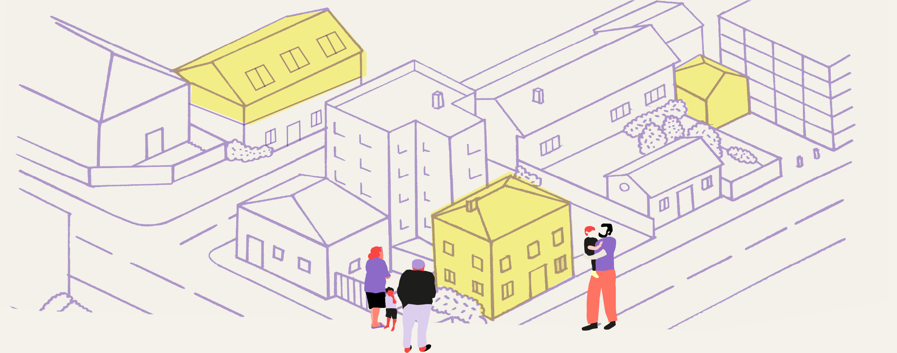
⌄Le dispositif
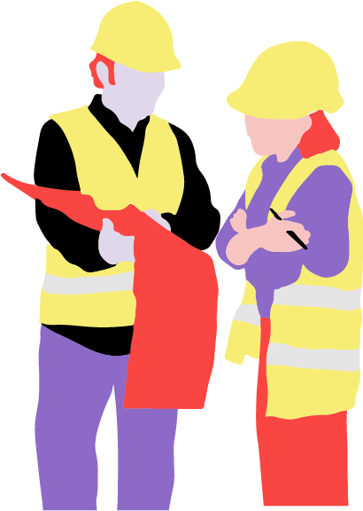
Weco propose un nouveau modèle économique de mixité sociale, un dispositif d'immobilier solidaire, ayant pour objectif de loger chacun dignement :
→ La réhabilitation du patrimoine vacant appartenant à la personne publique ou privée est financée par la construction de logements neufs.
→ Les bâtiments réhabilités sont à destination des populations les plus fragiles.
→ Les logements neufs sont proposés en accession sociale à la propriété.
Le dispositif
Trois missions principales
→ L'accès à un logement décent pour chacun
→ La mixité sociale et l'insertion des personnes mal-logées.
→ La lutte contre la précarité énergétique et la transition écologique, à travers la réhabilitation de l'immobilier dégradé.
Un gain pour les propriétaires !
Une réhabilitation sans dépense financière
Un gain pour le territoire !
Foncier vacant revalorisé dans la logique des Communs
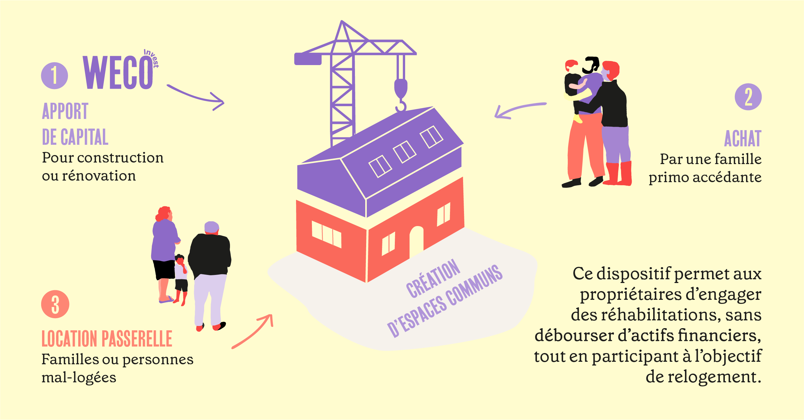
Le contexte
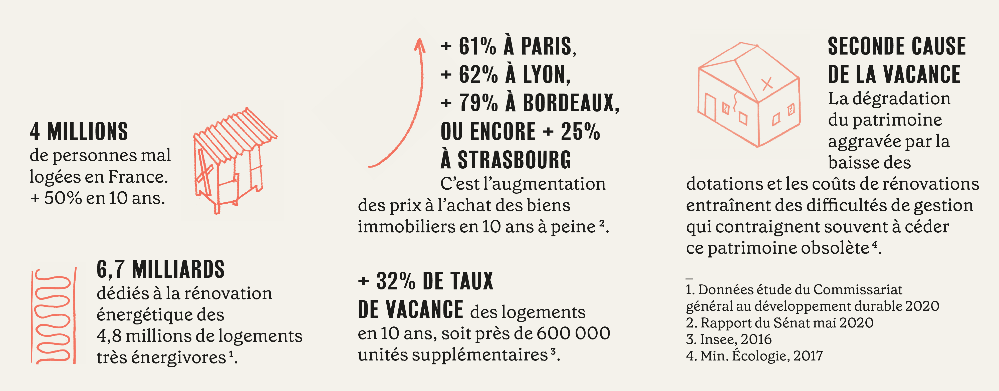
Innovation juridique
et économique
Une structure juridique adaptée aux enjeux : chaque territoire d'opérations donne lieu à la création d'une société de projet.
La structure juridique prend la forme d'une Société Coopérative d'Intérêt Collectif (SCIC), par actions simplifiée, à capital variable. La personne publique étant sociétaire minoritaire, la SCIC monte ses opérations dans le cadre de marchés privés, ce qui en facilite d'autant la gestion.
Un modèle économique pérenne
Dans une logique de promotion immobilière solidaire, chaque réhabilitation donne lieu à la construction de logement neuf sur la même parcelle. Le foncier est ainsi revalorisé par une densification douce et par la rénovation des biens immobiliers dégradés. La vente des logements neufs finance la réhabilitation, ainsi qu'une partie de l'accompagnement social des personnes relogées dans le bâti rénové.
Apports au capital de la SCIC
→ L'association Quatorze apporte en industrie le modèle opérationnel de co-construction nécessaire à la rentabilité.
→ Weco Invest apporte en numéraire le financement des opérations
→ Les personnes publiques ou privées propriétaires apportent en nature des parcelles et biens immobiliers.
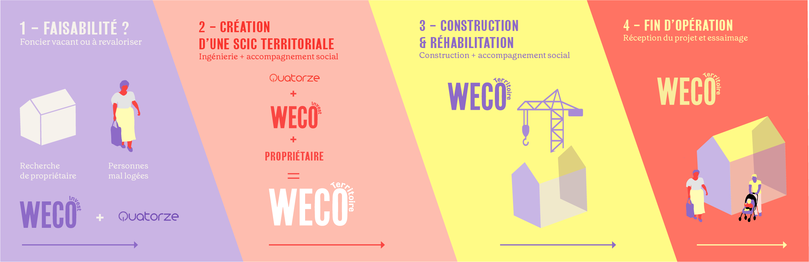
Budget d'un projet Weco Invest
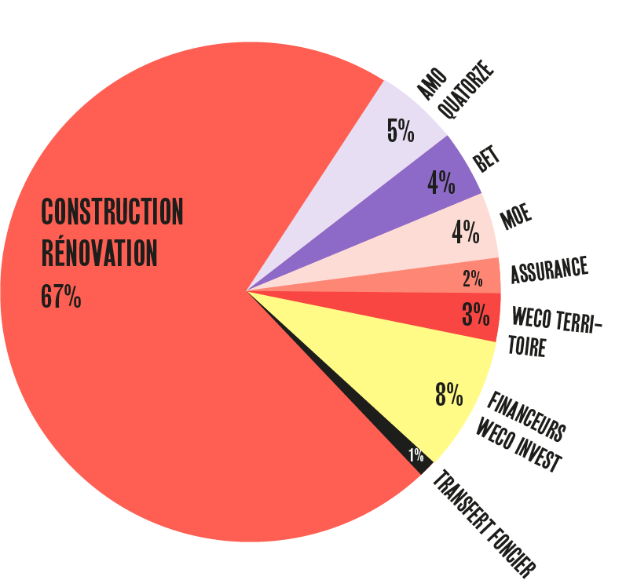
« Grand Prix ESSEC de la Ville solidaire et de l'Immobilier responsable »
Cette année, le dispositif Weco a été lauréat du Prix Grand Paris Innovation Urbaine Solidaire, dans le cadre de la remise des « Grands Prix ESSEC de la Ville solidaire et de l'Immobilier responsable », organisée par la Chaire Immobilier et Développement durable de l'ESSEC.
Ce Prix vise à faire émerger des initiatives pouvant apporter des solutions innovantes face à la crise sociale et économique du logement.
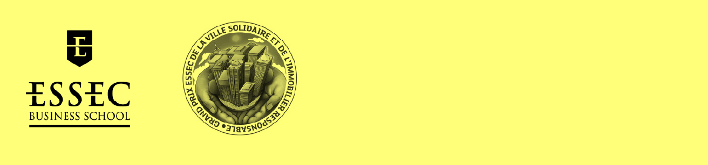
Historique et plan de développement
La résorption pacifique d'un bidonville à Montreuil en 2018 fait émerger un modèle alternatif, en collaboration étroite avec la fondation Abbé Pierre. Weco se positionne face aux difficultés d'accès à un logement pour les exclus des dispositifs classiques.
Le fonds d'investissement coopératif Weco Invest est alors créé pour mettre la finance solidaire au service des projets luttant contre le mal-logement.
Élargissement des publics
Conçu pour reloger des personnes vivant en bidonville, ce dispositif s'adresse aujourd'hui à un public élargi, en fonction des enjeux d'accès au logement identifiés localement.
Déploiement national
Actuellement en cours d'expérimentation à Montreuil, Weco a pour vocation à essaimer sur de nouveaux territoires, afin d'accélérer la résorption de l'habitat indigne dans toute la France. Des coopératives dédiées seront créées sur chaque territoire de projet.
D'ici 5 ans
Nous avons pour ambition de créer un réseau de dix territoires investis sur la production de deux cent logements très sociaux.
À 10 ans
Nous préparons une accélération de la production de logements, en ouvrant le dispositif aux propriétaires privés, afin d'atteindre l'objectif de mille logements très sociaux.
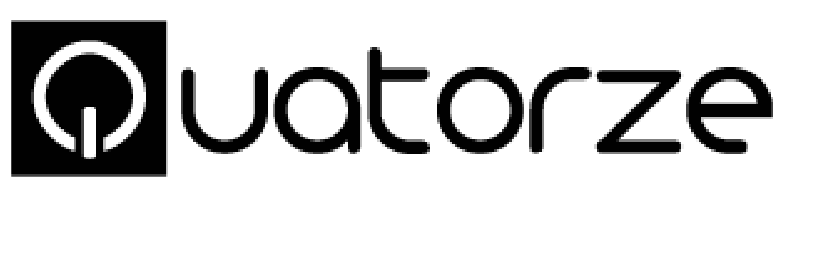
Quatorze est une association qui vise à promouvoir, expérimenter et transmettre une approche de l'architecture sociale et solidaire. Elle mène des projets d'architecture et d'urbanisme en co-conception et co-construction, autour de trois principaux champs d'action : accueil inconditionnel, formation-action, espaces communs.
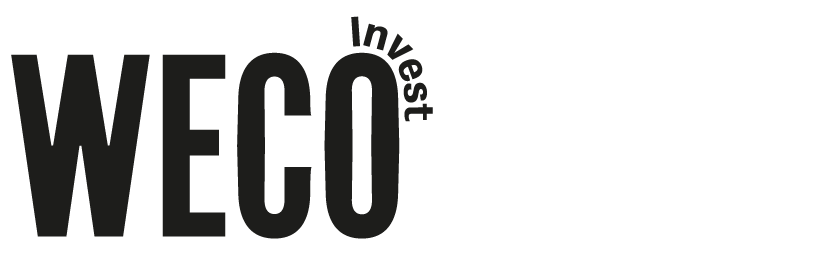
Weco Invest est un fonds d'investissement coopératif développé en 2018 dans le but de fédérer une communauté d'investisseurs (privés et institutionnels) engagés sur la résorption de l'habitat indigne en France et en Europe.
Équipe
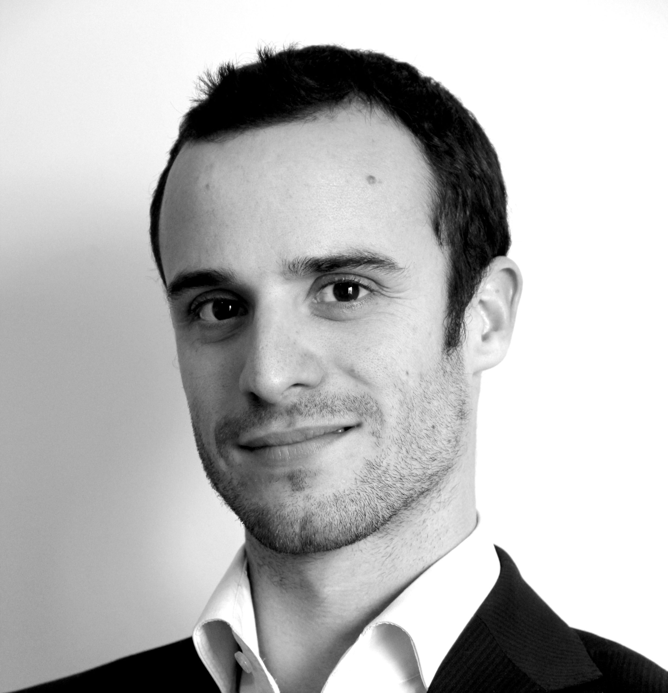
Mathieu Castaings
Expert-Comptable, juridique et financier. PDG FINACOOP et FINACOOP Nouvelle-Aquitaine. DG Weco Invest
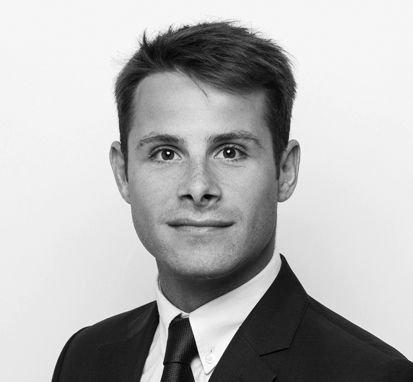
Aymeric Poisson
Avocat à la Cour. Co-fondateur de Weco Invest, spécialisé en droit public des affaires (contrats, marchés, construction et domanialité) et chargé d'enseignement à l'ESSEC Business School.
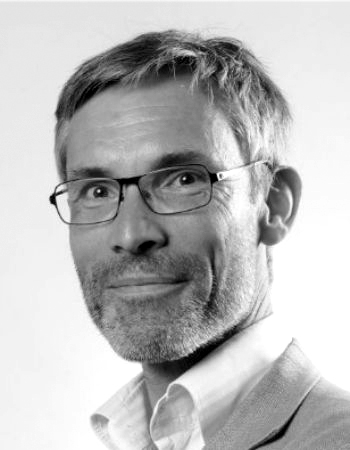
Franck Mackowiak
Directeur Immobilier chez Association Aurore. Co-fondateur et administrateur de Weco Invest
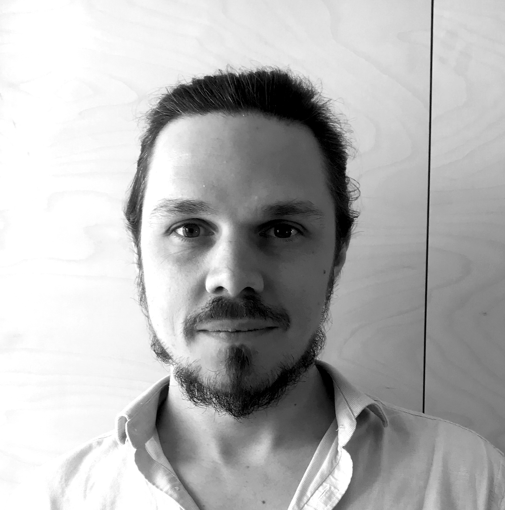
Romain Minod
Architecte. Co-fondateur et président de Weco Invest. Co-fondateur et co-directeur de l'association Quatorze
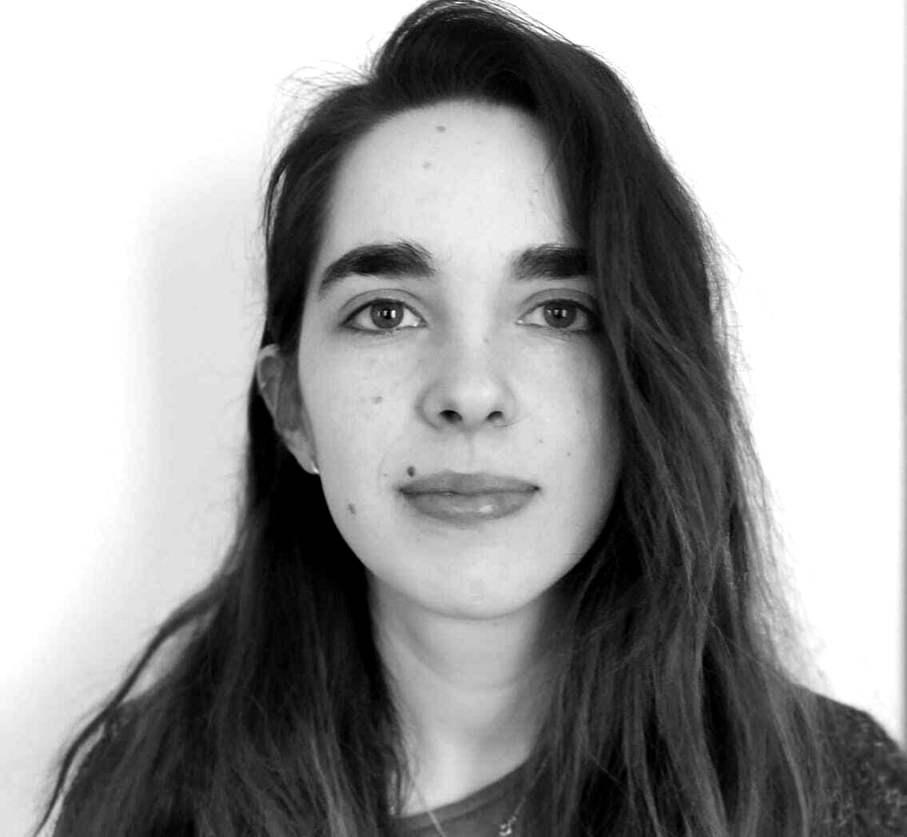
Margaux Charbonnier
Chargée de développement Weco et programme « Territoire Zéro Bidonville ». Diplômée de l'ESSEC (spécialité économie urbaine) et de l'ENS (département de géographie)
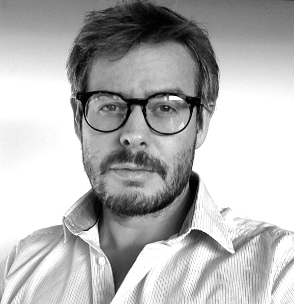
Antoine Demarest
Architecte et chargé de développement Weco région Sud-Est. Co-fondateur de l'association Quatorze, ancien directeur d'entreprise générale de construction et enseignant en Construction à l'ENS-Architecture de Marseille.
Les partenaires
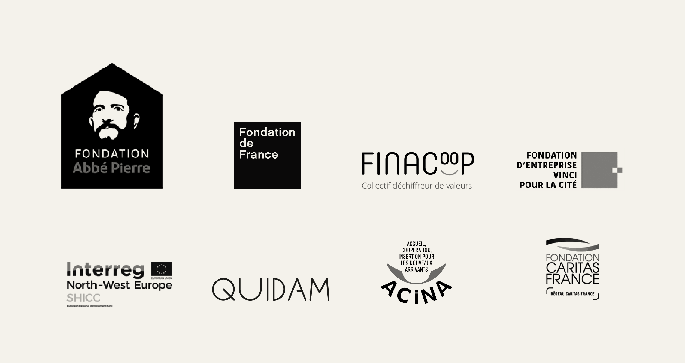
WECO
La Halle aux Cuirs,
Parc de la Villette,
2, rue de la Clôture,
75 019 Paris
www.weco.coop
contact@weco.coop